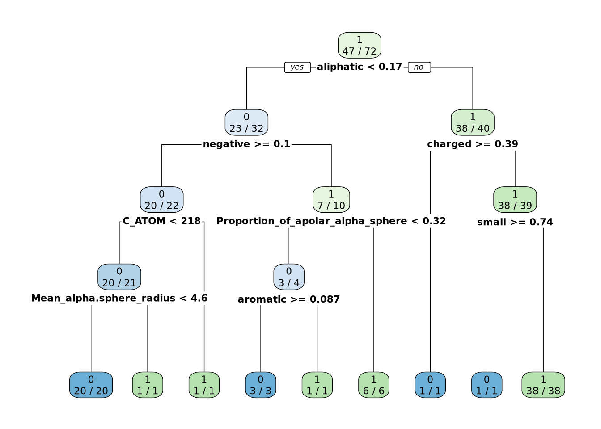
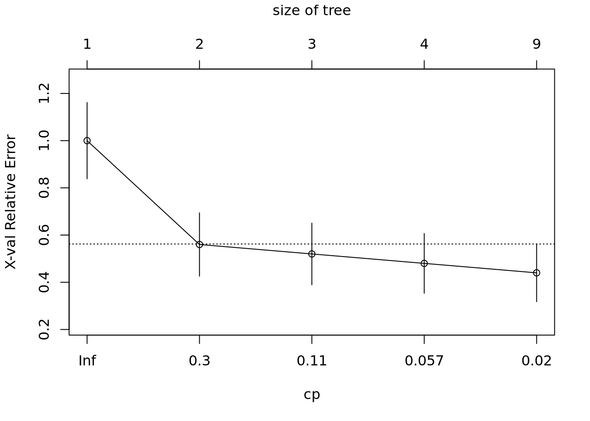
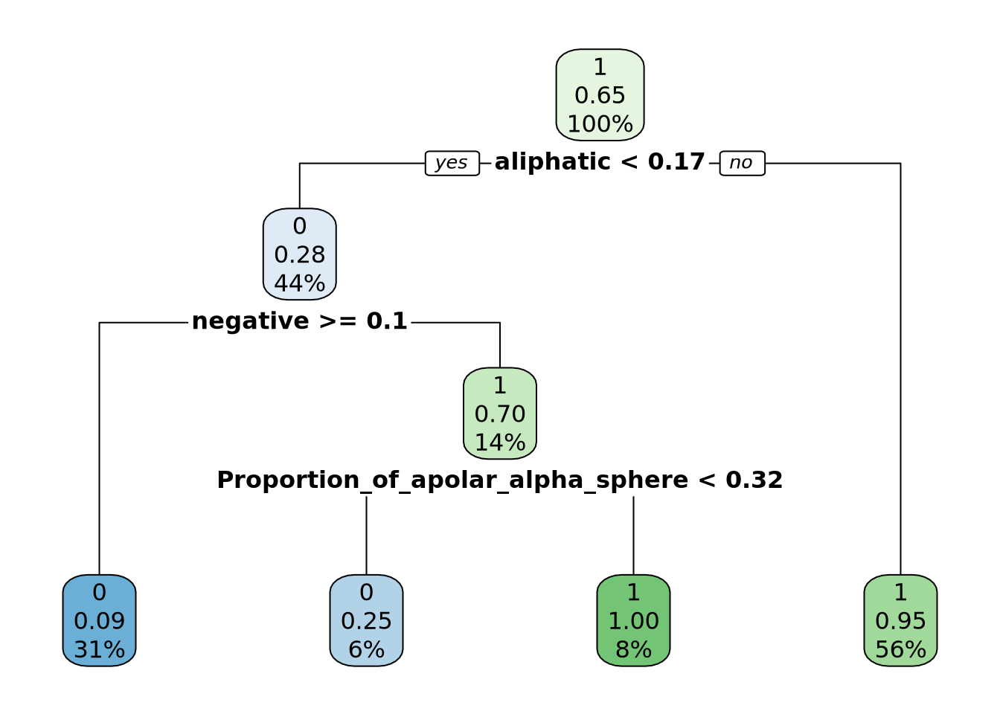
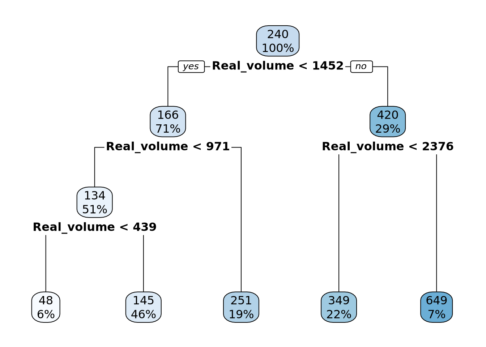
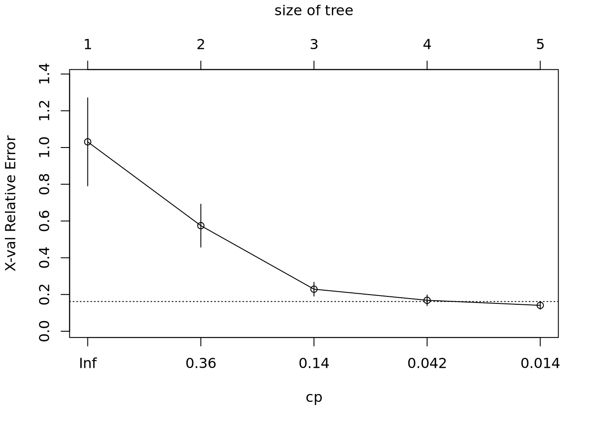
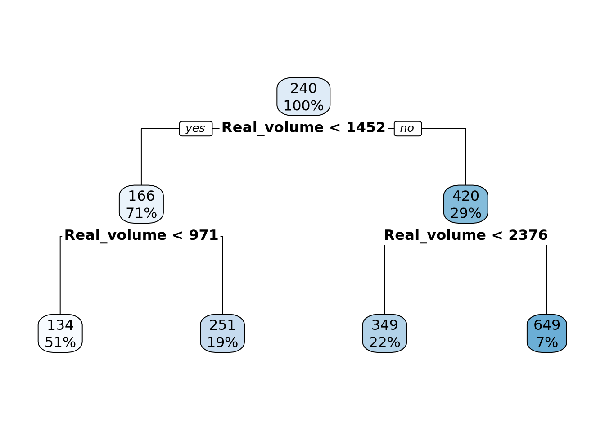

load("../data/train.dtf.Rdata")
load("../data/test.dtf.Rdata")TP4 : arbres de partitionnement, cart
library(rpart)
library(rpart.plot)Création de jeux de données corrects
#train.names <- sample(rownames(X), 2*nrow(X)/3, replace = FALSE)
#test.names <- rownames(X)[-which(rownames(X) %in% train.names)]
#res.sample <- PCA(X, scale.unit = TRUE, ind.sup = match(test.names, rownames(X)))
#fviz_pca_biplot(res.sample, geom='point')
#train.set <- X[train.names,]
#test.set <- X[test.names,]
#train.dtf <- cbind(train.set, Y[train.names,])
#test.dtf <- cbind(test.set, Y[test.names,])
#save(train.dtf, file = "../data/train.dtf.Rdata")
#save(test.dtf, file = "../data/test.dtf.Rdata")train_drugg <- train.dtf[, -which(colnames(train.dtf) == "score")]
test_drugg <- test.dtf[, -which(colnames(test.dtf) == "score")]
Fit <- rpart(drugg~., data = train_drugg, control = rpart.control(minsplit = 1))
rpart.plot(Fit, extra = 2)
library(caret)Loading required package: ggplot2Loading required package: lattice# Train set
fit_predict_train <- predict(Fit, newdata = train_drugg)
conf_train_fit <- confusionMatrix(as.factor(round(fit_predict_train[, 2])),
as.factor(train_drugg$drugg))
# Test set
fit_predict_test <- predict(Fit, newdata = test_drugg)
conf_test_fit <- confusionMatrix(as.factor(round(fit_predict_test[, 2])),
as.factor(test_drugg$drugg))
# Plot
plotcp(Fit)
Ness <- prune(Fit, cp = 0.057)
rpart.plot(Ness)
# Train set
ness_predict_train <- predict(Ness, newdata = train_drugg)
conf_train_ness <- confusionMatrix(as.factor(round(ness_predict_train[, 2])),
as.factor(train_drugg$drugg))
# Test set
ness_predict_test <- predict(Ness, newdata = test_drugg)
conf_test_ness <- confusionMatrix(as.factor(round(ness_predict_test[, 2])),
as.factor(test_drugg$drugg))conf_train_fit$overall[1]Accuracy
1 conf_test_fit$overall[1] Accuracy
0.7027027 conf_train_ness$overall[1] Accuracy
0.9305556 conf_test_ness$overall[1] Accuracy
0.7027027 df_acc <- data.frame(
train_fit = conf_train_fit$overall[1],
test_fit = conf_test_fit$overall[1],
train_ness = conf_train_ness$overall[1],
test_ness = conf_test_ness$overall[1]
)
df_acc <- t(df_acc)train_score <- train.dtf[, -which(colnames(train.dtf) == "drugg")]
test_score <- test.dtf[, -which(colnames(test.dtf) == "drugg")]
Fit <- rpart(score~., data = train_score, control = rpart.control(minsplit = 2))
rpart.plot(Fit)
library(caret)
# Train set
fit_spred_train <- predict(Fit, newdata = train_score)
sperf_train_fit <- postResample(fit_spred_train, train_score$score)
# Test set
fit_spred_test <- predict(Fit, newdata = test_score)
sperf_test_fit <- postResample(fit_spred_test, test_score$score)
# Plot
plotcp(Fit)
Ness <- prune(Fit, cp = 0.042)
rpart.plot(Ness)
# Train set
ness_spred_train <- predict(Ness, newdata = train_drugg)
sperf_train_ness <- postResample(ness_spred_train, train_score$score)
# Test set
ness_spred_test <- predict(Ness, newdata = test_drugg)
sperf_test_ness <- postResample(ness_spred_test, test_score$score)# Create a dataframe
results_df <- data.frame(
RMSE = c(41.3386484, 50.6410931, 46.5379404, 50.6410931),
Rsquared = c(0.9229773, 0.9299857, 0.9023842, 0.9299857),
MAE = c(33.3168518, 39.2805625, 37.7836200, 39.2805625),
row.names = c("train_original", "test_original", "train_pruned", "test_pruned")
)print("hello world!")